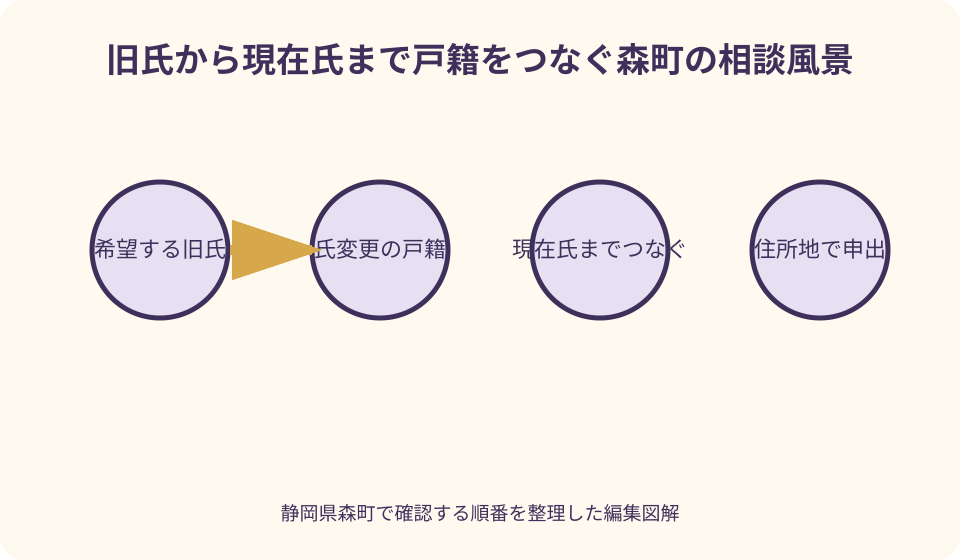
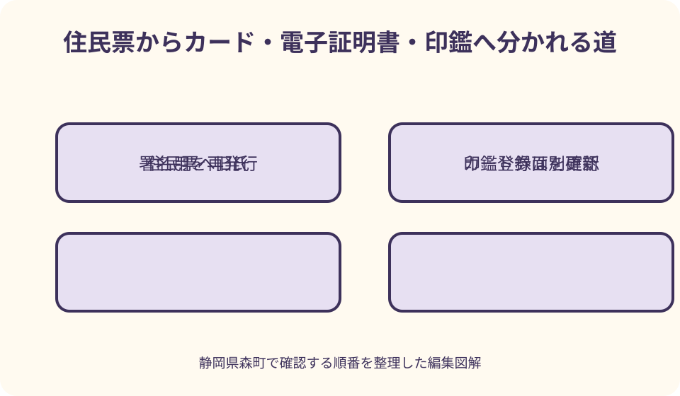

行政手続・証明書｜最終確認 2026-08-10
静岡県森町で住民票に旧氏を併記する｜戸籍・印鑑登録・マイナンバーカード
旧氏併記は、戸籍の氏を以前の氏へ戻す手続ではありません。現在の氏を残したまま、過去の戸籍上の氏を住民票へ一つ記載し、その情報をマイナンバーカードや署名用電子証明書などへ連動させる申出です。印鑑登録には別の確認があるため、一枚の申請ですべて終わると思わず順序を分けます。
旧氏併記の結論と四つの手続
旧氏併記を考えるときは、戸籍、住民票、マイナンバーカード、印鑑登録を一つにまとめないことが大切です。戸籍は過去にその氏を称していた事実を示し、住民票は住所地の市区町村へ旧氏の記載を申し出る土台になります。カードと印鑑は、その記載後に影響を確認する対象です。
旧氏とは、本人が過去の戸籍上で称していた氏です。職場だけで使う呼び名や、戸籍に現れない芸名を自由に登録する制度ではありません。複数の旧氏がある人も、住民票へ記載するのは過去の氏から選ぶ一つなので、どれを公証したいかを申出前に決めます。
森町に本籍があるかではなく、現在どの市区町村に住民登録があるかが申出先を考える基準です。森町に住民登録がある人は住民生活課住民係へ相談します。本籍が町外なら、戸籍証明の取得先と旧氏併記の申出先が別になることがあります。
この記事は2026年8月10日時点の一次情報をもとにしています。申出の持ち物、代理可否、カード処理、電子証明書の再発行は個別事情で変わり得ます。戸籍を取り寄せる前に、希望する旧氏とこれまでの氏の変更回数を伝え、必要な戸籍の範囲を森町へ確認してください。
旧氏を住民票へ載せる意味
旧氏併記は、現在の氏を消して旧氏だけにする仕組みではありません。住民票には現在の氏名と旧氏が併せて記載され、過去の氏を使ってきた本人と現在の戸籍上の本人が同一であることを公的書類で示しやすくします。氏そのものを変更する戸籍届とは目的が違います。
制度は2019年11月5日に始まりました。J-LISは、住民票へ旧氏を記載すると、マイナンバーカードや公的個人認証サービスの署名用電子証明書にも旧氏が併記されると説明しています。職場、契約、銀行口座などで旧氏を使う場面の本人確認に役立つ可能性があります。
ただし、旧氏が記載された公的書類を出せば、どの会社や金融機関でも旧氏名義を必ず受け付けるという保証ではありません。受入先ごとに本人確認規程や名義変更の要否があります。旧氏併記を申し出る前に、実際に提出する先へ必要書類を聞くと目的が明確になります。
住民票へ旧氏を記載した後は、証明を取るたびに都合よく旧氏だけを外せるとは考えないでください。現在氏と旧氏は住民記録上の一組として扱われます。旧氏の表示範囲、証明書の選択欄、削除後の扱いを事前に窓口へ確認し、長く使う情報として選びます。
最初に選ぶ旧氏と利用目的
婚姻前の氏を職場で使い続けている人は、その氏と現在氏を結び付けたいという目的が分かりやすいでしょう。一方、複数回氏が変わった人は、最も古い氏、直前の氏、資格登録で使う氏のどれを選ぶかで必要な戸籍の範囲と実務上の効果が変わります。
申出前に、旧氏を見せたい相手を三件まで書きます。勤務先、資格団体、金融機関などです。それぞれに、住民票、マイナンバーカード、印鑑登録証明書のどれが必要かを確認します。『旧氏併記ができるから取得する』のではなく、使い道から逆算します。
過去の氏のうち一つを選ぶ制度なので、家族の呼び方や思い入れだけで決めると、実際の契約名義と合わないことがあります。旧氏で残っている通帳、資格証、著作物、勤務記録などを並べ、最も説明が必要な氏を候補にします。
不動産登記にも所有権登記名義人の氏名へ旧氏を併記する別制度がありますが、住民票の申出をしただけで登記へ自動反映されるわけではありません。法務省は、住所証明情報に旧氏が記録されている場合に旧氏を証する情報として使える場面を示しています。登記で使う予定があれば法務局側の要件も確認します。
戸籍で旧氏から現在氏までをつなぐ
申出で重要なのは、希望する旧氏が過去の戸籍に載っていることだけでなく、その旧氏から現在の氏へ本人が移ったつながりを確認できることです。現在戸籍だけに以前の氏が十分現れない場合、婚姻や離婚など氏が変わった時点を含む前の戸籍や除籍が必要になることがあります。
氏が一度だけ変わった人と、婚姻、離婚、再婚などで複数回変わった人では、必要な証明の通数が同じとは限りません。希望する旧氏が載る戸籍から現在の戸籍まで、途中の氏の変更が切れずに追える範囲を森町へ尋ねます。自分の判断で現在戸籍一通だけを取らない方が安全です。
本籍を移した転籍がある人は、氏の変更がなくても戸籍の発行元が分かれる場合があります。戸籍の広域交付で取得できる範囲、郵送請求が必要な範囲、本人以外が取る際の資格確認は別論点です。申出用の戸籍をどの方法で集められるかを先に組み立てます。
森町公式の戸籍証明請求案内は、窓口請求の対象者や本人確認、郵送で用意するものを掲載しています。本籍地が森町なら取得方法の入口になりますが、旧氏併記に必要な連続戸籍を自動で一式発行するとは限りません。使い道に『住民票への旧氏併記』と伝え、必要な範囲を具体化してください。
森町の窓口へ持って行く前の確認
持ち物の基本候補は、旧氏と現在氏のつながりを示す戸籍謄本等、本人確認書類、持っている人はマイナンバーカードです。ただし、必要な戸籍の原本範囲、返却の扱い、代理人の書類は個別に確認します。古いJ-LIS案内にある通知カードは現在の運用と違う部分があるため、そのまま準備表へ写しません。
窓口へは、希望する旧氏を正確な漢字で書いたメモも持参します。異体字や外字がある場合は、仕事で使う簡略表記と戸籍上の文字を分けます。住民票へ記載できる旧氏は戸籍上の氏が基礎なので、通帳の文字だけを根拠に置き換えることはできません。
2025年以降は、住民票に旧氏の振り仮名も記載される制度が加わっています。2026年5月26日以降はマイナンバーカードへの氏名や旧氏の振り仮名記載も始まっています。新たに旧氏を申し出る人は、旧氏の漢字だけでなく読みの扱いも森町へ確認してください。
代理での申出を考える場合は、戸籍証明を代理取得できることと、住民票へ旧氏を申し出られることを同じに扱いません。本人が書く委任状、代理人の本人確認、カードを預ける場合の処理など、行為ごとに条件を聞きます。森町の委任状様式ページも最新日を確かめて使います。

住民票への反映と証明書の取り方
旧氏併記の申出が受理されると、現在氏に加えて旧氏が住民記録へ載ります。その後、住民票の写しを請求するときは、提出先が世帯全員分か本人分か、本籍や続柄など別項目を必要とするかも確認します。旧氏が必要だからといって、他の記載項目まで自動で適切になるわけではありません。
森町公式では、住民票の写しは本人または同一世帯員が請求でき、別世帯の代理人は委任状と本人確認書類が必要と案内しています。同じ住所でも住民登録上の世帯が別なら、同一世帯扱いにはなりません。旧氏併記後の確認を家族へ頼むときも世帯区分を見ます。
コンビニ交付では、森町に住民登録がある十五歳以上の人が、利用者証明用電子証明書を搭載したカードと四桁暗証番号を使って住民票を取得できます。ただしカードの取得・更新手続後は利用可能になるまでの時間差が案内されています。旧氏追記直後の取得可能時点は窓口で聞いてください。
証明書を一通取ったら、現在氏、旧氏、旧氏の振り仮名が意図どおりかを提出前に確認します。旧氏の字体が資格証と違う場合、住民票が誤っているのか、提出先の記録が略字なのかを切り分けます。誤りを見つけたらコピーを配る前に森町へ戻します。
マイナンバーカードへ旧氏を反映する
マイナンバーカードは住民票の内容を基礎にするため、住民票へ旧氏が記載されるとカードにも旧氏を載せる対象になります。既にカードを持つ人は、住民票の申出だけを終えて帰るのではなく、券面追記やカード内部の情報更新を同日にどう行うか確認します。
カードをまだ持っていない人は、住民票へ旧氏を記載した後にカードを申請すると、旧氏を含む住民票情報に基づいた券面になります。申出とカード申請の順序を逆にすると、交付待ち中に情報が変わる可能性があるため、申請中なら住民生活課へ状況を伝えます。
カード券面に旧氏があることは、現在氏のカードへ旧氏という補足を加えることです。旧氏だけの身分証明書になるわけではありません。提出先が旧氏のみの申請を受けるか、現在氏との併記を求めるかは、その機関のルールを別に確認します。
2026年5月26日以降に発行申請するカードでは、戸籍と住民票にフリガナが記載されていれば氏名のフリガナも券面へ加わる案内です。既存カードへの追記、旧氏の振り仮名、国外転出者向けカードには条件差があるため、自分のカード種別と申出日を窓口へ伝えます。
署名用電子証明書の失効を見落とさない
J-LISは、旧氏併記を申し出ると、マイナンバーカードの署名用電子証明書が自動的に失効するため、窓口で再申請も行うよう案内しています。署名用には氏名や住所などが記録されるので、旧氏の追加という氏名情報の変化に合わせた処理が必要です。
署名用電子証明書は、e-Taxなど電子文書を作成・送信する場面で使います。旧氏併記当日にカード券面だけ更新し、署名用の再発行を確認しないと、後日オンライン申請時に初めて使えないと気付くおそれがあります。近い提出期限があるなら必ず申出前に伝えます。
利用者証明用電子証明書は、マイナポータルへのログインやコンビニ交付で使う四桁暗証番号側の証明書です。J-LISの案内では旧氏併記だけで失効せず引き続き使えるとされています。二種類を『電子証明書』の一語でまとめず、再発行対象を確認します。
署名用の再発行では暗証番号入力が関わります。暗証番号を忘れた、ロックした、顔認証カードへ切り替えているなどの事情があれば、同日の完了範囲が変わる可能性があります。カード、暗証番号、オンライン申請予定を一組で準備してください。
印鑑登録への反映を別に考える
住民票へ旧氏が記載されると、旧氏を用いた印鑑登録を行える土台になります。森町は2019年の条例改正時、住民票への旧氏記載に合わせ、印鑑登録証明書の氏名欄などを住民票表記へ合わせる説明を議会で行いました。旧氏と現在氏を結ぶ証明として活用する場面が想定されています。
しかし、住民票へ旧氏を載せれば、手元の旧氏印が自動で実印になるわけではありません。印鑑登録は一人一個で、登録できる印影、本人確認、保証人方式などの条件があります。現在の登録印を維持するのか、旧氏印へ改印するのかを別に決めます。
森町公式は、登録済みの印鑑を変更するときは、登録証を添えて廃止届をした上で新規登録を行うと案内しています。旧氏併記と改印を同日に希望するときは、登録証、旧氏印、本人確認書類、即日処理の可否を事前に聞きます。
印鑑登録証明書へ旧氏がどう表示されるかと、押された印影がどの氏を表すかは別の情報です。契約先が求めるのが旧氏の公証なのか、現在氏の実印なのか、登録印と証明書の一致なのかを確認し、不必要な改印をしないようにします。
婚姻・離婚・転入との順序を組み立てる
婚姻届と旧氏併記の申出は同じものではありません。婚姻届で現在の戸籍上の氏が変わり、その変化が戸籍へ反映された後、旧氏とのつながりを示す戸籍を用意して住所地へ申出を行う流れを考えます。戸籍反映前に取得した証明ではつながりが完成していない場合があります。
離婚時も、離婚後に称する氏の選択と住民票の旧氏併記を分けます。森町の離婚届案内には、氏の変更がある人が旧姓で印鑑登録している場合の登録廃止に関する注意があります。現在の登録状況を伝え、離婚届後に旧氏併記と印鑑登録をどう組み直すか確認します。
森町へ転入する人は、前住所地で既に住民票へ記載していた旧氏が新住所の住民票へどう引き継がれるかを転入届時に確認します。カードの住所追記、継続利用、署名用電子証明書、印鑑登録はそれぞれ処理があるため、旧氏情報を含むカードを必ず提示します。
氏の変更と住所変更が近い日程に重なると、どの市区町村へ何を申し出るか分かりにくくなります。婚姻届受理日、転出予定日、転入届日、カード更新日を一列にし、旧氏併記の申出をどの住所地で行うか両自治体へ確認してください。
旧氏を変更・削除する前に考える
住民票へ一度記載した旧氏は、現在の氏が再び変わっても自動で別の旧氏へ差し替わるとは限りません。どの旧氏を継続するか、新たな直前氏へ変更できるかは、氏が変わった経過と申出時期を示して森町へ確認します。
旧氏を使わなくなったから削除したいと考える人もいます。しかし削除後に同じ旧氏を再度載せたくなったときの条件や、その後新たに生じた旧氏の扱いには制限があります。証明書の見た目だけで削除を決めず、将来の資格、口座、登記で使う可能性を点検します。
変更や削除を行えば、カード券面や署名用電子証明書にも再度処理が必要になる可能性があります。旧氏情報だけを住民票から消し、カードは以前のまま使うという管理はできません。変更申出とカード処理を同日で終えられるか確認します。
印鑑登録も連動確認が必要です。旧氏で表した印を登録している人が旧氏を削除すると、登録条件を満たさなくなる可能性があります。削除申出より前に印鑑登録の継続可否と、必要なら廃止・新規登録の順序を住民係へ聞いてください。
良い点
旧氏併記の良い点は、現在の戸籍上の氏を維持しながら、以前の氏で積み重ねた職歴、資格、口座などとの連続性を公的書類で説明しやすくなることです。改姓前後の二枚の身分証を毎回並べる負担を減らせる場面があります。
住民票を起点に、マイナンバーカードや署名用電子証明書へ情報がつながる点も利点です。顔写真付きカードへ現在氏と旧氏が併記されれば、対面の本人確認で関係を説明しやすくなります。デジタル手続でも新しい署名用証明書へ旧氏情報が反映されます。
印鑑登録証明書へ旧氏が表れる仕組みは、旧氏を使う契約場面で助けになる可能性があります。ただし相手方の受入条件を確認することが前提です。公的に旧氏を載せられることと、契約先が旧氏だけの署名を認めることは別だからです。
申出のために戸籍のつながりを集める作業は、自分の氏の変更履歴を家族が把握する機会にもなります。将来の相続や各種名義確認で、旧氏が異なる同一人物の資料を結び付けやすくなります。目的を決めて保存すれば、一度の手続以上の価値があります。
注文したい点
注文したい点は、旧氏併記という一言から、住民票、カード、電子証明書、印鑑登録がすべて自動で同時に整うように見えることです。実際には、住民票への申出が起点で、カード券面と電子証明書の処理、印鑑の選択を窓口で個別に確認する必要があります。
必要な戸籍の範囲も初めての人には分かりにくい部分です。公式案内で『旧氏が記載された戸籍謄本等』と書かれていても、氏の変更が複数あれば現在氏までのつながりが一通で示せないことがあります。具体例を窓口へ伝えないと、取り直しが起きやすくなります。
旧氏を記載した住民票の写しを、提出時だけ旧氏なしにできると思う人もいるでしょう。旧氏は希望した一枚だけに添える注記ではなく、住民記録の記載事項です。提出先へ見せる情報の範囲が気になる場合は、申出前に証明書の表示と代替書類を確認する必要があります。
さらに、署名用電子証明書の失効は、券面の追記より目に見えにくい注意点です。窓口を出た時点でカード表面が正しくても、e-Tax直前に使えないことがあります。再発行、暗証番号、反映時点までを一つの受付票で案内してもらえると安心です。

代案・結論
戸籍がそろわないときの代案は、手元の一通だけで申出を試すことではありません。希望旧氏、現在氏、氏が変わった年月、本籍の移動を一覧にして森町へ示し、足りない戸籍の発行元と範囲を確認します。広域交付、郵送請求、本籍地窓口を使い分けます。
旧氏の証明が急ぎで、申出とカード更新が期限に間に合わない場合は、提出先へ別の証明組合せを相談します。改姓前後の戸籍、現在の本人確認書類、旧氏名義の資格証など、何を認めるかは提出先が決めます。旧氏併記が唯一の方法と決めつけないでください。
印鑑登録まで同日に行えない場合は、まず住民票とカードの旧氏情報を整え、契約日を確認した上で改印日を別にします。現在の登録印を先に廃止すると、間に印鑑登録証明書が必要になったとき困ります。廃止と新規登録の時間差も聞いておきます。
結論は、旧氏を一つ選び、戸籍のつながりを確認し、住民票への申出、カード処理、署名用電子証明書、印鑑登録の順に四つのチェック欄を作ることです。一つ終わるたびに日付と結果を書けば、旧氏を公証する目的へ無理なく近づけます。
家族と共有する氏名履歴
家族の記録には、現在氏、希望する旧氏、その氏を称していた期間、氏が変わった戸籍届、本籍地を分けて書きます。婚姻前の氏を単に『旧姓』とだけ書くより、戸籍のどの期間に現れるかが分かる方が証明請求に役立ちます。
取得した戸籍は、旧氏の戸籍、変更が載る戸籍、現在戸籍の順に並べます。個人情報が多いため、必要箇所以外を安易に家族チャットへ送らず、原本の保管者と申出に持参する人を決めます。提出後に返却されるかも記録します。
住民票、マイナンバーカード、印鑑登録の確認日は別々に残します。カード券面の写真を保存するときは個人番号のある裏面を撮らず、共有範囲を限定します。暗証番号を同じ記録用紙へ書かないことも重要です。
旧氏で続いている契約の一覧には、名義変更が必要、旧氏併記カードで継続可、未確認の三状態を付けます。銀行、保険、資格、勤務先、不動産を一律に扱わず、各機関の回答日と担当窓口を残します。
大石の視点
私は、旧氏併記は本人確認を整える有用な手段ですが、不動産の名義問題を一度に解決するものではないと考えます。住民票へ旧氏が載っても、登記簿上の氏名変更や相続登記が自動で済むわけではありません。
不動産資料では、売買契約書、登記事項証明書、固定資産税の書類、相続関係戸籍が異なる氏で残ることがあります。住民票の旧氏は同一人物を説明する材料になり得ますが、法務局や取引相手が求める資料を先に確認し、用途に合う証明を集めます。
実家や土地をまだ売ると決めていない家族も、所有者の現在氏、過去の氏、住所、本籍、登記名義を一枚へ分けておくとよいでしょう。氏名の履歴と住所の履歴を混ぜずに整理すると、将来の相談でどこが未更新か見つけやすくなります。
旧氏を載せるか迷うときは、見た目の好みより、どの資料を誰へ示す必要があるかで判断します。申出後は旧氏が公的な住民記録へ加わります。利便性と、証明書へ継続表示されることの双方を理解して選ぶのが堅実です。
窓口で聞く質問を具体化する
最初の質問は、『この旧氏から現在氏までを示すため、どの戸籍が必要ですか』です。氏の変更回数、本籍の移動、希望する旧氏を伝えます。戸籍名を自分で指定するより、証明したい経過を説明した方が不足を減らせます。
次に、『住民票へ記載した日に、カード券面、署名用電子証明書、旧氏の振り仮名をどこまで処理できますか』と聞きます。カード申請中、暗証番号不明、代理来庁などの事情があれば、質問時にすべて伝えます。
印鑑については、『現在の登録印を維持した場合の証明書表示』と『旧氏印へ改印する場合の必要物』を分けて尋ねます。旧氏が証明書へ載ることと、旧氏の印影を登録することを混同しない質問にします。
最後に、処理後いつ住民票を取得すれば反映を確認できるかを聞きます。窓口交付とコンビニ交付で利用可能時点が同じとは限りません。急ぎの提出先があるなら期日を示し、確認用証明を取る日を決めます。
まとめ
森町で住民票へ旧氏を併記するときは、過去の戸籍上の氏から一つを選び、旧氏から現在氏までのつながりを戸籍で示す準備をします。本籍地と住所地が違えば、戸籍取得先と申出先も分かれます。
住民票へ旧氏が記載されると、マイナンバーカードや署名用電子証明書へも関係します。署名用は失効後の再発行を確認し、利用者証明用と区別します。カード券面だけ見て電子手続まで完了したと思わないでください。
印鑑登録は別の手続です。旧氏が住民票に載ること、印鑑登録証明書へ旧氏が表れること、旧氏印を実印として登録することを三つに分けます。現在印の廃止を急がず、契約日と新規登録の条件を確認します。
今日の一歩は、使いたい旧氏と提出先を決め、氏の変更履歴を年順に書くことです。その紙をもとに森町住民生活課住民係へ戸籍範囲と同日処理の可否を聞けば、住民票、カード、電子証明書、印鑑を順序立てて整えられます。
公式情報・確認先
掲載内容は次の一次情報を基礎に整理しました。営業、料金、催し、交通は変わるため、出発前または手続き前にリンク先で最新情報を確認してください。
- 住民票の写しの申請（静岡県森町、2026-08-10確認）
- 戸籍謄本・戸籍抄本等の申請（静岡県森町、2026-08-10確認）
- 印鑑登録（静岡県森町、2026-08-10確認）
- 証明書のコンビニ交付サービスについて（静岡県森町、2026-08-10確認）
- 住民票・マイナンバーカード等への旧氏併記の開始について（地方公共団体情報システム機構、2026-08-10確認）
- マイナンバーカードに旧姓（旧氏）の記載はできますか（マイナンバーカード総合サイト、2026-08-10確認）
- マイナンバーカードへの氏名の振り仮名等の記載について（マイナンバーカード総合サイト、2026-08-10確認）
- 所有権の登記名義人への旧氏（旧姓）の併記について（法務省、2026-08-10確認）